●論理代数
- SymPy には真偽値を表す専用のクラス Boolean が用意されている
- S.true, 真を表すシングルトンオブジェクト
- S.false, 偽を表すシングルトンオブジェクト
- 論理演算
- 否定, ~, Not()
- 論理積, &, And()
- 論理和, |, Or()
- 排他的論理和, ^, Xor()
- 否定論理積, Nand(), (= Not(And(...))
- 否定論理和, Nor(), (= Not(Or(...))
- 論理包含 (含意), >>, <<, Implies()
- 同値, Equivalent()
- 真理値表
P : False False True True Q : False True False True --------+------------------------- Not P : True True False False Not Q : True False True False P And Q : False False False True P Or Q : False True True True P Xor Q : False True True False P Equ Q : True False False True P Imp Q : True True False True Q Imp P : True False True True
- 同値は P と Q が同じ値 (True と True または False と False) のとき真になる
- 論理包含 P Imp Q は P が真ならば Q の結果に、P が偽ならば Q の結果にかかわらず真となる
- 変数に値を代入するときは Python の真偽値や整数 (0 や 1) を使ってもよい
>>> sy.S.true True >>> type(sy.S.true) <class 'sympy.logic.boolalg.BooleanTrue'> >>> sy.S.false False >>> type(sy.S.false) <class 'sympy.logic.boolalg.BooleanFalse'> >>> ~x ¬x >>> x & y x ∧ y >>> x | y x ∨ y >>> x ^ y x ⊻ y >>> x >> y x → y >>> x << y y → x >>> sy.Equivalent(x, y) x ⇔ y >>> ~x.subs(x, True) False >>> ~x.subs(x, False) True >>> (x | y).subs(x, True) True >>> (x | y).subs(x, False) y >>> (x & y).subs(x, True) y >>> (x & y).subs(x, False) False >>> (x ^ y).subs(x, True) ¬y >>> (x ^ y).subs(x, False) y >>> (x >> y).subs(x, True) y >>> (x >> y).subs(x, False) True >>> sy.Equivalent(x, y).subs(x, True) y >>> sy.Equivalent(x, y).subs(x, False) ¬y
- POSform() と SOPform() は真理値表から論理式を生成する
POSform(vars, minterms, dontcares=None) => And_Object SOPform(vars, minterms, dontcares=None) => Or_Object
- 論理式は not, and, or の組み合わせで実現することができる
- POSform は Product Of Sum form の略 (乗法標準形)
- SOPform は Sum Of Product form の略 (加法標準形)
- vars には変数を格納したリスト
- minterms には真理値表 (二重のリスト) を渡す (真となるパターンだけ, 残りのパターンは偽となる)
- dontcares は真偽どちらでもかまわないパターンを渡す
>>> a = sy.POSform([x, y], [[0, 1], [1, 0]]) >>> a (x ∨ y) ∧ (¬x ∨ ¬y) >>> a.subs([[x, False], [y, False]]) False >>> a.subs([[x, True], [y, False]]) True >>> a.subs([[x, False], [y, True]]) True >>> a.subs([[x, True], [y, True]]) False >>> b = sy.SOPform([x, y], [[0, 1], [1, 0]]) >>> b (x ∧ ¬y) ∨ (y ∧ ¬x) >>> b.subs([[x, False], [y, False]]) False >>> b.subs([[x, False], [y, True]]) True >>> b.subs([[x, True], [y, False]]) True >>> b.subs([[x, True], [y, True]]) False
- A ∧ B ∧ ... ∧ Z の形の論理式を連言標準形 (Conjunctive Normal Form, CNF) という
- A ∨ B ∨ ... ∨ Z の形の論理式を選言標準形 (Disjunctive Normal Form, DNF) という
- is_cnf(expr) は論理式 expr が CNF に変換できるかチェックする
- to_cnf(expr) は論理式 expr を CNF に変換する
- is_dnf(expr) は論理式 expr が DNF に変換できるかチェックする
- to_dnf(expr) は論理式 expr を DNF に変換する
- 変換できない場合は論理式 expr を返す
- 関数 simplify_logic() は論理式を単純化する
simplify_logic(expr, form=None, deep=True)
- form に 'cnf' を指定すると CNF に、'dnf' を指定すると DNF に変換する
- deep が True だと再帰的に単純化を適応する
- 真となる組み合わせが見つからない場合は False を返す
- 解が複数ある場合、キーワード引数 all_models=True を設定するとジェネレータを返す
>>> sy.boolalg.is_cnf(x & y & z)
True
>>> sy.boolalg.is_cnf(x | y | z)
True
>>> sy.boolalg.is_cnf(x & y | z)
False
>>> sy.to_cnf(x & y | z)
(x ∨ z) ∧ (y ∨ z)
>>> sy.boolalg.is_dnf(x & y | z)
True
>>> sy.to_dnf(x & y | z)
z ∨ (x ∧ y)
>>> sy.to_cnf(x ^ z)
(x ∨ z) ∧ (¬x ∨ ¬z)
>>> sy.to_dnf(x ^ z)
(x ∧ ¬x) ∨ (x ∧ ¬z) ∨ (z ∧ ¬x) ∨ (z ∧ ¬z)
>>> sy.simplify_logic(x & y | z)
z ∨ (x ∧ y)
>>> sy.simplify_logic(x & y | z, form='cnf')
(x ∨ z) ∧ (y ∨ z)
>>> sy.simplify_logic(x & y | z, form='dnf')
z ∨ (x ∧ y)
>>> a = sy.to_dnf(x ^ z)
>>> a
(x ∧ ¬x) ∨ (x ∧ ¬z) ∨ (z ∧ ¬x) ∨ (z ∧ ¬z)
>>> sy.simplify_logic(a)
(x ∧ ¬z) ∨ (z ∧ ¬x)
>>> sy.satisfiable(x ^ y)
{x: True, y: False}
>>> for a in sy.satisfiable(x ^ y, all_models=True): print(a)
...
{x: True, y: False}
{y: True, x: False}
>>> sy.satisfiable(False)
False
●等式と不等式
- SymPy で等式を表すには Eq(lhs, rhs) を使う
- lhs == rhs は Python の等値演算子になる
- lhs = rhs はシンタックスエラー
- not equal を表す Ne(lhs, rhs) もある
- なお、Eq((x + 1)**2, x**2 + 2*x + 1) のような等式の等値は判定できない
- (x + 1)**2 を expand() で展開すれば True になる
- 方程式を解く関数 solveset() は Eq() を受け付ける
- 不等式は Lt(), Le(), Gt(), Ge() もしくは演算子 <, <=, >, >= を使う
- コンストラクタ Xx() でキーワード引数 evaluate=False を指定すると、すぐに評価せずにオブジェクト (式) を返す
- その場合、メソッド doit() で式を評価する
>>> a = sy.Eq(x + y, z)
>>> a
x + y = z
>>> a.subs([[x, 1], [y, 2], [z, 3]])
True
>>> a.subs([[x, 1], [y, 2], [z, 4]])
False
>>> b = sy.Eq(1 + 2, 3, evaluate=False)
>>> b
3 = 3
>>> b.doit()
True
>>> c = sy.Ne(1 + 2, 3, evaluate=False)
>>> c
3 ≠ 3
>>> c.doit()
False
>>> sy.Eq((x + 1)**2, x**2 + 2*x + 1)
2 2
(x + 1) = x + 2⋅x + 1
>>> sy.Eq(sy.expand((x + 1)**2), x**2 + 2*x + 1)
True
>>> sy.solveset(x**2 - 4)
{-2, 2}
>>> sy.solveset(sy.Eq(x**2, 4))
{-2, 2}
>>> x + y < z
x + y < z
>>> x + y <= z
x + y ≤ z
>>> x + y > z
x + y > z
>>> x + y >= z
x + y ≥ z
>>> a = (x > 2) | (x < -2)
>>> a
x > 2 ∨ x < -2
>>> a.subs(x, 0)
False
>>> a.subs(x, 10)
True
>>> a.subs(x, -10)
True
- 不等式に関連する公式
- (a + b) / 2 >= √(ab), (a > 0, b > 0)
- (a**2 + b**2)(x**2 + y**2) >= (ax + by)**2
- (ax + by) / 2 >= ((a + b) / 2) * ((x + y) / 2), (a >= b, x >= y)
- 1 は「相加平均は相乗平均より大きい」ことを表す
- 2 は「シュワルツの不等式」と呼ばれる
- 3 は「チェビシェフの不等式」と呼ばれる
- これらの式は要素を n 個に増やしても成立する
>>> a = sy.Symbol('a')
>>> b = sy.Symbol('b')
>>> e = sy.Ge((a + b) / 2, sy.sqrt(a * b))
>>> e
a b _____
─ + ─ ≥ ╲╱ a⋅b
2 2
>>> e.subs([[a, 10], [b, 20]])
True
>>> e.subs([[a, 10], [b, 10]])
True
>>> e.subs([[a, -10], [b, -10]])
False
>>> e = sy.Ge((a**2 + b**2)*(x**2 + y**2), (a*x + b*y)**2)
>>> e
⎛ 2 2⎞ ⎛ 2 2⎞ 2
⎝a + b ⎠⋅⎝x + y ⎠ ≥ (a⋅x + b⋅y)
>>> e.subs([[a, 1], [b, 2], [x, 3], [y, 4]])
True
>>> e.subs([[a, 1], [b, -2], [x, -3], [y, 4]])
True
>>> e = sy.Ge((a*x + b*y)/2, ((a + b)/2)*((x + y)/2))
>>> e
a⋅x b⋅y ⎛a b ⎞ ⎛x y ⎞
── + ── ≥ ⎜─ + ─⎟⋅⎜─ + ─⎟
2 2 ⎝2 2 ⎠ ⎝2 2 ⎠
>>> e.subs([[a, 2], [b, 1], [x, 4], [y, 3]])
True
>>> e.subs([[a, 2], [b, 3], [x, 4], [y, 3]])
False
>>> e.subs([[a, 2], [b, 1], [x, 4], [y, 5]])
False
●微分方程式
- 微分方程式とは、x の関数 y = f(x) とその導関数を含む方程式のこと
- 微分方程式を解くとは y = f(x) を求めること
- 微分方程式は常微分方程式 (ordinary differential equation, ODE) と偏微分方程式 (partial differential equation, PDE) に分かれる
- ここでは常微分方程式について取り上げる
- 簡単な例
微分方程式 dy/dx - ky = 0 式を変形する (1/y)dy = kdx 両辺を積分する ∫(1/y)dy = ∫kdx => log(y) + C1 = kx + C2 C2 - C1 = C とおくと log(y) = kx + C => y = exp(C) * exp(kx)
- SymPy で微分方程式を解くには関数 dsolve(expr, func, hint=default) を使う
- 引数 expr に微分方程式を、func に求める関数を指定する
- hint は方程式を解くためのヒントを指定する (ヒントは関数としてあらかじめライブラリに用意されている)
- 微分方程式を記述するため未知の関数を表すシンボルを定義する
symbols('name ...', cls=Function)
>>> sy.var('n m x y z')
(n, m, x, y, z)
>>> sy.init_printing()
>>> f = sy.symbols('f', cls=sy.Function)
>>> f(x)
f(x)
>>> f(x).diff(x)
d
─(f(x))
dx
>>> sy.dsolve(f(x).diff(x) - n * f(x), f(x))
n⋅x
f(x) = C₁⋅ℯ
>>> sy.dsolve(sy.Eq(f(x).diff(x), n * f(x)), f(x))
n⋅x
f(x) = C₁⋅ℯ
●いろいろな関数
- SymPy にはいろいろな関数が定義されている
- ここでは基本的な関数をいくつか紹介する
- 詳細はリファレンス Functions Module を参照
- 絶対値, Abs(n)
- 符号, sign(n)
- 最大値, Max(n, m, ...)
- 最小値, Min(n, m, ...)
- 平方根, sqrt(n)
- 立方根, cbrt(n)
- 指数関数, exp(n)
- 自然対数, log(n)
- 底 b を指定する場合は log(n, b)
- 床関数, floor(n)
- 天井関数, ceiling(n)
>>> sy.var('n m x y z')
(n, m, x, y, z)
>>> sy.init_printing()
>>> sy.Abs(n)
│n│
>>> sy.Abs(10)
10
>>> sy.Abs(-10)
10
>>> sy.sign(n)
sign(n)
>>> sy.sign(0)
0
>>> sy.sign(10)
1
>>> sy.sign(-10)
-1
>>> sy.Max(x, y, z)
Max(x, y, z)
>>> sy.Max(1, 2, 3)
3
>>> sy.Min(x, y, z)
Min(x, y, z)
>>> sy.Min(1, 2, 3)
1
>>> sy.sqrt(2)
√2
>>> sy.sqrt(2).evalf()
1.41421356237310
>>> sy.cbrt(3)
3 ___
╲╱ 3
>>> sy.cbrt(3).evalf()
1.44224957030741
>>> sy.exp(1)
ℯ
>>> sy.exp(1).evalf()
2.71828182845905
>>> sy.log(2)
log(2)
>>> sy.log(2).evalf()
0.693147180559945
>>> sy.log(4, 2)
2
>>> sy.log(5, 2)
log(5)
───
log(2)
>>> for i in range(-5, 6): print(i - 0.5, sy.floor(i - 0.5))
...
-5.5 -6
-4.5 -5
-3.5 -4
-2.5 -3
-1.5 -2
-0.5 -1
0.5 0
1.5 1
2.5 2
3.5 3
4.5 4
>>> for i in range(-5, 6): print(i - 0.5, sy.ceiling(i - 0.5))
...
-5.5 -5
-4.5 -4
-3.5 -3
-2.5 -2
-1.5 -1
-0.5 0
0.5 1
1.5 2
2.5 3
3.5 4
4.5 5
- cot(x) = 1 / tan(x), sec(x) = 1 / cos(x), csc(x) = 1 / sin(x)
- csc は cosec のこと
- coth(x) = 1 / tanh(x), sech(x) = 1 / cosh(x), csch(x) = 1 / sinh(x)
>>> sy.diff(sy.sin(x))
cos(x)
>>> sy.diff(sy.cos(x))
-sin(x)
>>> sy.diff(sy.tan(x))
2
tan (x) + 1
>>> sy.integrate(sy.sin(x))
-cos(x)
>>> sy.integrate(sy.cos(x))
sin(x)
>>> sy.integrate(sy.tan(x))
-log(cos(x))
>>> sy.sin(x).series(x)
3 5
x x ⎛ 6⎞
x - ─ + ── + O⎝x ⎠
6 120
>>> sy.cos(x).series(x)
2 4
x x ⎛ 6⎞
1 - ─ + ─ + O⎝x ⎠
2 24
>>> sy.tan(x).series(x)
3 5
x 2⋅x ⎛ 6⎞
x + ─ + ── + O⎝x ⎠
3 15
階乗 0! = 1 n! = n * (n - 1) * (n - 2) * ... * 3 * 2 * 1 再帰定義 0! = 1 n! = n * (n - 1)!
>>> sy.factorial(n) n! >>> sy.factorial(10) 3628800 >>> sy.factorial(20) 2432902008176640000 >>> sy.factorial(30) 265252859812191058636308480000000 >>> sy.summation(1/sy.factorial(x), (x, 0, sy.oo)) ℯ >>> sy.summation(1/((x + 2) * sy.factorial(x)), (x, 0, sy.oo)) 1
- フィボナッチ数の説明は拙作のページ Puzzle DE Programming フィボナッチ数 を参照
フィボナッチ数 fibonacci(0) = 0 fibonacci(1) = 1 fibonacci(n) = fibonacci(n - 1) + fibonacci(n - 2), n > 1
>>> sy.fibonacci(n) fibonacci(n) >>> for i in range(40): print(sy.fibonacci(i), end=" ") ... 0 1 1 2 3 5 8 13 21 34 55 89 144 233 377 610 987 1597 2584 4181 6765 10946 17711 28657 46368 75025 121393 196418 317811 514229 832040 1346269 2178309 3524578 5702887 9227465 14930352 24157817 39088169 63245986
リュカ数 lucas(0) = 2 lucas(1) = 1 lucas(n) = lucas(n - 1) + lucas(n - 2), n > 1
>>> sy.lucas(n) lucas(n) >>> for i in range(40): print(sy.lucas(i), end=" ") ... 2 1 3 4 7 11 18 29 47 76 123 199 322 521 843 1364 2207 3571 5778 9349 15127 24476 39603 64079 103682 167761 271443 439204 710647 1149851 1860498 3010349 4870847 7881196 12752043 20633239 33385282 54018521 87403803 141422324
- n 個のものから r 個を選ぶ組み合わせ
- sympy.functions.combinatorial.numbers.nC(n, r) もある
- nC() の第 1 引数は列 (シーケンス) でもよい
組み合わせの数 (1) nＣr = n! / (r!(n - r)!) (2) nＣ0 = nＣn = 1 nＣr = nＣr-1 * (n - r + 1) / r (3) nＣ0 = nＣn = 1 nＣr = n-1Ｃr-1 + n-1Ｃr
>>> sy.binomial(m, n)
binomial(m, n)
>>> for i in range(1, 16):
... for j in range(0, i+1): print(sy.binomial(i, j), end=" ")
... print("")
...
1 1
1 2 1
1 3 3 1
1 4 6 4 1
1 5 10 10 5 1
1 6 15 20 15 6 1
1 7 21 35 35 21 7 1
1 8 28 56 70 56 28 8 1
1 9 36 84 126 126 84 36 9 1
1 10 45 120 210 252 210 120 45 10 1
1 11 55 165 330 462 462 330 165 55 11 1
1 12 66 220 495 792 924 792 495 220 66 12 1
1 13 78 286 715 1287 1716 1716 1287 715 286 78 13 1
1 14 91 364 1001 2002 3003 3432 3003 2002 1001 364 91 14 1
1 15 105 455 1365 3003 5005 6435 6435 5005 3003 1365 455 105 15 1
- ff(n, r) = n * (n - 1) * (n - 2) * ... * (n - r + 1)
- n 個のものから r 個を選んで、1 列に並べる並べ方の数 nＰr になる
- sympy.functions.combinatorial.numbers.nP(n, r) もある
順列の数 nＰr = n! / (n - r)!
>>> sy.ff(m, n) FallingFactorial(m, n) >>> for i in range(10): print(sy.ff(10, i), end=" ") ... 1 10 90 720 5040 30240 151200 604800 1814400 3628800
- rf(n, r) = n * (n + 1) * ... * (n + r - 1)
>>> sy.rf(m, n) RisingFactorial(m, n) >>> for i in range(10): print(sy.rf(10, i), end=" ") ... 1 10 110 1320 17160 240240 3603600 57657600 980179200 17643225600
- 集合を分割する方法の総数はベル数 (Bell Number) になる
- たとえば、集合 {1, 2, 3} は次のように分割することができる
1 分割 : {{1, 2, 3}}
2 分割 : {{1, 2}, {3}}, {{1, 3}, {2}}, {{1}, {2, 3}}
3 分割 ; {{1}, {2}, {3}}
ベル数
B(0) = 1
n
B(n+1) = Σ nＣk * B(k), n >= 1
k=0
>>> sy.bell(n) bell(n) >>> for i in range(20): print(sy.bell(i), end=" ") ... 1 1 2 5 15 52 203 877 4140 21147 115975 678570 4213597 27644437 190899322 1382958545 10480142147 82864869804 682076806159 5832742205057
- カタラン数になるもの
- () を正しく並べる方法 (カッコ列) の総数
- n + 1 個の葉をもつ二分木の総数
- 対角線を超えない格子状の最短経路の総数
- n + 2 角形に対角線を n − 1 本引いて三角形に分割する方法の総数
- などなど
カタラン数
(2n)!
Ｃn = ----------
(n+1)!n!
>>> sy.catalan(n) catalan(n) >>> for i in range(25): print(sy.catalan(i), end=" ") ... 1 1 2 5 14 42 132 429 1430 4862 16796 58786 208012 742900 2674440 9694845 35357670 129644790 477638700 1767263190 6564120420 24466267020 91482563640 343059613650 1289904147324
- 整数 n を 1 以上の自然数の和で表すことを「整数の分割」という
- 整数を分割するとき、同じ自然数を何回使ってもいいが、並べる順序が違うだけのものは同じ分割とする
- 分割の仕方の総数を「分割数」という
- 分割数の説明は拙作のページ Puzzle DE Programming 分割数 を参照
- nT(n) は n の分割数を返す
- nT(n, r) は n を r 分割したときの総数を返す
- たとえば、5, 6, 7 の分割は次のようになる
[5] [4, 1] [3, 2] [3, 1, 1] [2, 2, 1] [2, 1, 1, 1] [1, 1, 1, 1, 1] [6] [5, 1] [4, 2] [4, 1, 1] [3, 3] [3, 2, 1] [3, 1, 1, 1] [2, 2, 2] [2, 2, 1, 1] [2, 1, 1, 1, 1] [1, 1, 1, 1, 1, 1] [7] [6, 1] [5, 2] [5, 1, 1] [4, 3] [4, 2, 1] [4, 1, 1, 1] [3, 3, 1] [3, 2, 2] [3, 2, 1, 1] [3, 1, 1, 1, 1] [2, 2, 2, 1] [2, 2, 1, 1, 1] [2, 1, 1, 1, 1, 1] [1, 1, 1, 1, 1, 1, 1]
>>> sy.functions.combinatorial.numbers.nT(5) 7 >>> sy.functions.combinatorial.numbers.nT(6) 11 >>> sy.functions.combinatorial.numbers.nT(7) 15 >>> sy.functions.combinatorial.numbers.nT(5, 3) 2 >>> sy.functions.combinatorial.numbers.nT(6, 3) 3 >>> sy.functions.combinatorial.numbers.nT(7, 4) 3 >>> sy.functions.combinatorial.numbers.nT(100) 190569292 >>> sy.functions.combinatorial.numbers.nT(1000) 24061467864032622473692149727991 >>> sy.functions.combinatorial.numbers.nT(10000) 36167251325636293988820471890953695495016030339315650422081868605887952568754066420592310556052906916435144
- k を省略すると 1 になる
- k <= 1 は発散し、k > 1 は収束する (リーマンゼータ関数 ζ (k) に等しい)
n
Hn,k = Σ 1 / xk
x=1
>>> sy.harmonic(n) harmonic(n) >>> for i in range(1, 10): print(sy.harmonic(i), end=" ") ... 1 3/2 11/6 25/12 137/60 49/20 363/140 761/280 7129/2520 >>> sy.harmonic(sy.oo) ∞ >>> sy.harmonic(sy.oo, 2) 2 π ─ 6 >>> sy.harmonic(sy.oo, 3) ζ(3)
●特殊関数
- 理論的にも実用的にも重要で、特別な名前や記法が定着している関数のことを「特殊関数 (special functions)」と呼ぶ
- 特殊関数は微分方程式の解や初等関数の積分の解として現れることが多い
- SymPy には多くの特殊関数が用意されている
- ここでは基本的な関数をいくつか取り上げる
- 詳細はリファレンス Functions Module の Special を参照
- ガンマ関数 (gamma function), gamma(x)
∞
Γ(x) = ∫e-ttx-1dt
0
- 階乗を複素数まで拡張した関数
- 漸化式 Γ(x + 1) = x * Γ(x) を満たす
- x が正の整数のとき Γ(x) = (x - 1)! となる
- このほかにも log(Γ(x)) を求める loggamma(x) などいろいろ用意されている
- 参考 URL: ガンマ関数 - Wikipedia
>>> sy.gamma(sy.Rational(1, 2)) √π >>> sy.gamma(sy.Rational(2, 2)) 1 >>> sy.gamma(sy.Rational(3, 2)) √π ── 2 >>> sy.gamma(10) 362880 >>> sy.factorial(9) 362880 >>> sy.gamma(11) 3628800 >>> sy.factorial(10) 3628800
>>> sy.plot(sy.gamma(x), (x, -sy.pi, sy.pi), ylim=(-10, 10))
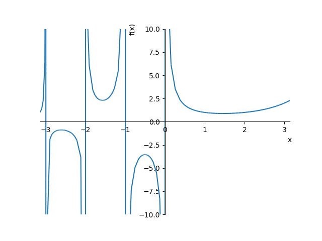
>>> sy.plotting.plot3d(sy.Abs(sy.gamma(x + y * sy.I)), (x, -4, 4), (y, -4, 4))
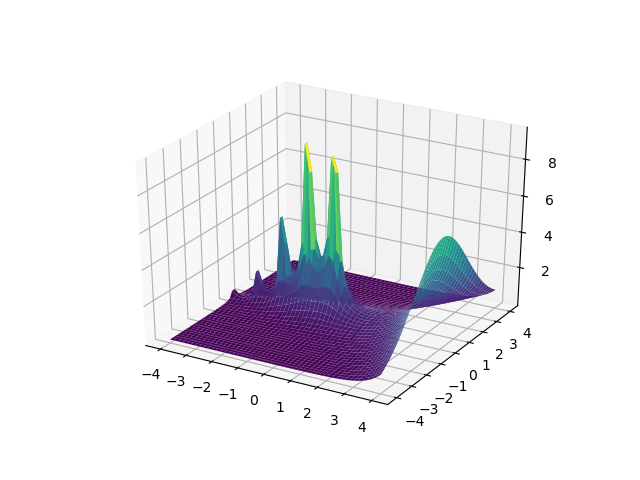

∞
ζ(s) = Σ 1/ns = 1/1s + 1/2s + 1/3s + ... , (s > 1)
n=1
- ゼータ関数は s > 1 で収束、s = 1 は調和級数になり発散する
- s が偶数の場合、次の式で表すことができる
(2π)2s
ζ(2s) = -------- * |B2s|
2(2s)!
>>> for i in range(2, 9): print(i, sy.zeta(i)) ... 2 pi**2/6 3 zeta(3) 4 pi**4/90 5 zeta(5) 6 pi**6/945 7 zeta(7) 8 pi**8/9450 >>> for i in range(2, 9): print(i, sy.zeta(i).evalf()) ... 2 1.64493406684823 3 1.20205690315959 4 1.08232323371114 5 1.03692775514337 6 1.01734306198445 7 1.00834927738192 8 1.00407735619794 >>> for i in range(0, 10): print(i, sy.bernoulli(i)) ... 0 1 1 -1/2 2 1/6 3 0 4 -1/30 5 0 6 1/42 7 0 8 -1/30 9 0
>>> sy.plot(sy.zeta(x, 1), (x, 1.1, 8))
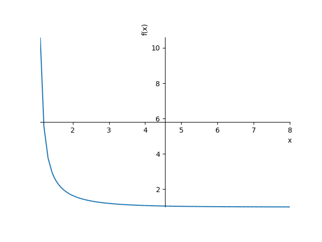
- ベッセル関数 (Bessel function)
- ベッセルの微分方程式の特殊解をベッセル関数という
dy2 dy
x2 * ----- + x * ---- + (x2 - n2) * y = 0
dx2 dx
∞ (-1)k
Ｊn(x) = Σ ------------ * (x / 2)n+2k
k=0 k!*(n + k)!
Ｊn(x) * cos(nπ) - Ｊ-n(x)
Ｙn(x) = -----------------------------
sin(nπ)
>>> sy.besselj(0, 0) 1 >>> sy.besselj(0, sy.oo) 0 >>> p1 = sy.plot(sy.besselj(0, x), (x, 0, 30), show=False) >>> p2 = sy.plot(sy.besselj(2, x), (x, 0, 30), line_color="red", show=False) >>> p3 = sy.plot(sy.besselj(4, x), (x, 0, 30), line_color="green", show=False) >>> p1.extend(p2) >>> p1.extend(p3) >>> p1.show()
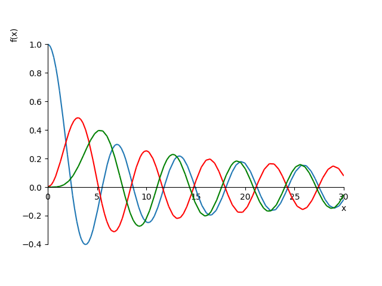
>>> sy.bessely(0, sy.oo) 0 >>> sy.bessely(0, 0) -∞ >>> p1 = sy.plot(sy.bessely(0, x), (x, 0.5, 20), show=False) >>> p2 = sy.plot(sy.bessely(1, x), (x, 0.5, 20), line_color="red", show=False) >>> p3 = sy.plot(sy.bessely(2, x), (x, 0.5, 20), line_color="green", show=False) >>> p1.extend(p2) >>> p1.extend(p3) >>> p1.show()
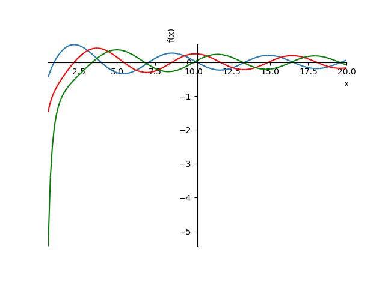
- 誤差関数 (Error function), erf(x)
2 x
erf(x) = ----- * ∫ e-t2 dt
√π 0
- ガウスの誤差関数とも呼ばれる
- 参考 URL: 誤差関数 - Wikipedia
>>> sy.erf(sy.oo) 1 >>> sy.erf(-sy.oo) -1 >>> for i in range(-3, 4): print(i, sy.erf(i)) ... -3 -erf(3) -2 -erf(2) -1 -erf(1) 0 0 1 erf(1) 2 erf(2) 3 erf(3) >>> for i in range(-3, 4): print(i, sy.erf(i).evalf()) ... -3 -0.999977909503001 -2 -0.995322265018953 -1 -0.842700792949715 0 0 1 0.842700792949715 2 0.995322265018953 3 0.999977909503001
>>> sy.plot(sy.erf(x), (x, -3, 3))
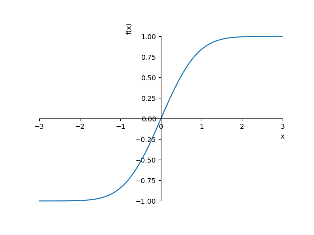
●関数のグラフ
- matplotlib がインストールされている場合、プロットは matplotlib を使って行われる
- 二次元 (2D) だけでなく三次元 (3D) も表示できる
- ここでは簡単な関数のグラフを SymPy で描画する
- 詳細はリファレンス Plotting Module を参照
- 多項式
- y = f(x) のグラフは関数 plot() を使うと簡単
plot(expr1 [, expr2, ...], (var, low, high), ...)
>>> sy.var('n m x y z')
(n, m, x, y, z)
>>> p1 = sy.plot(x**2 - 4, (x, -4, 4), ylim=(-20, 20), show=False)
>>> p2 = sy.plot(x**3 - 9*x, (x, -4, 4), line_color="red", ylim=(-20, 20), show=False)
>>> p3 = sy.plot(x**4 - 10*x**2 + 9, (x, -4, 4), line_color="blue", ylim=(-20, 20), show=False)
>>> p4 = sy.plot(x**5 - 5*x**3 + 4*x, (x, -4, 4), line_color="green", ylim=(-20, 20), show=False)
>>> p1.extend(p2)
>>> p1.extend(p3)
>>> p1.extend(p4)
>>> p1.show()
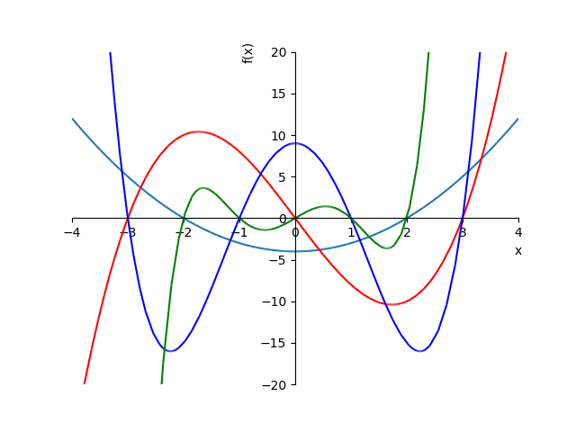
- y = x2 - 4, (cyan)
- y = x3 - 9x, (red)
- y = x4 - 10x2 + 9, (blue)
- y = x5 - 5x3 + 4x, (green)
- 指数関数・対数関数
>>> p1 = sy.plot(2**x, (x, -2, 2), ylim=(-5, 5), show=False) >>> p2 = sy.plot(0.5**x, (x, -2, 2), ylim=(-5, 5), line_color="red", show=False) >>> p3 = sy.plot(sy.log(x, 2), (x, -2, 2), ylim=(-5, 5), line_color="blue", show=False) >>> p4 = sy.plot(sy.log(x, 0.5), (x, -2, 2), ylim=(-5, 5), line_color="green", show=False) >>> p1.extend(p2) >>> p1.extend(p3) >>> p1.extend(p4) >>> p1.show()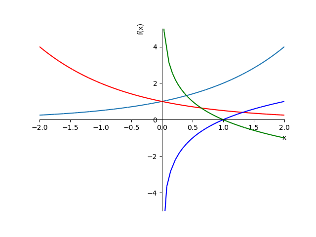
- y = 2x, (cyan)
- y = (1/2)x, (red)
- y = log2 x, (blue)
- y = log1/2 x, (green)
>>> p1 = sy.plot(sy.exp(x), (x, -2, 2), ylim=(-5, 5), show=False) >>> p2 = sy.plot(sy.log(x), (x, -2, 2), ylim=(-5, 5), line_color="red", show=False) >>> p1.extend(p2) >>> p1.show()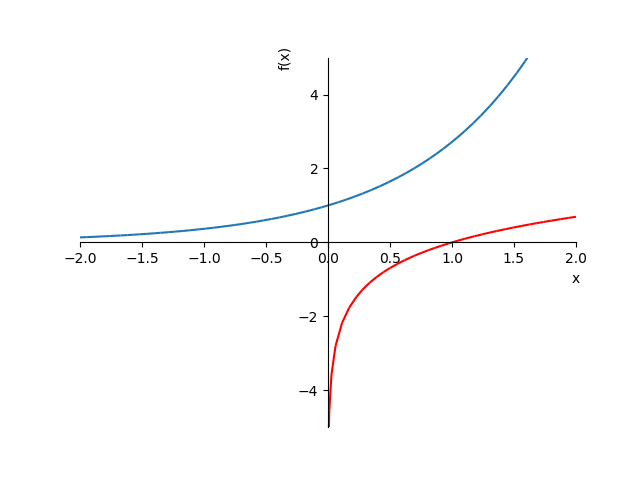
- y = ex, (cyan)
- y = ln x, (red)
- 平方根・立方根
>>> p1 = sy.plot(sy.sqrt(x), (x, 0, 9), show=False) >>> p2 = sy.plot(sy.cbrt(x), (x, 0, 9), line_color="red", show=False) >>> p1.extend(p2) >>> p1.show()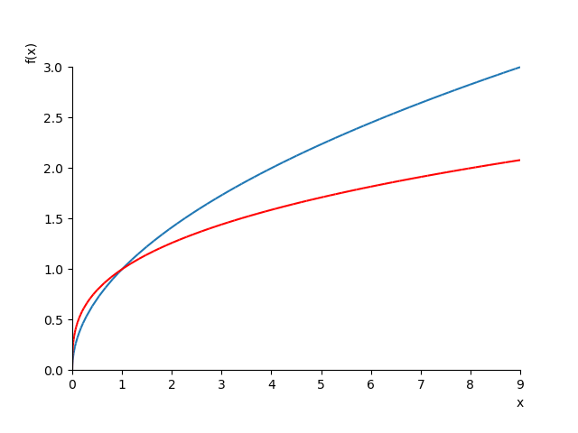
- y = √x, (cyan)
- y = cbrt(x), (red)
- 三角関数
>>> p1 = sy.plot(sy.sin(x), (x, -2*sy.pi, 2*sy.pi), show=False) >>> p2 = sy.plot(sy.cos(x), (x, -2*sy.pi, 2*sy.pi), line_color="red", show=False) >>> p1.extend(p2) >>> p1.show()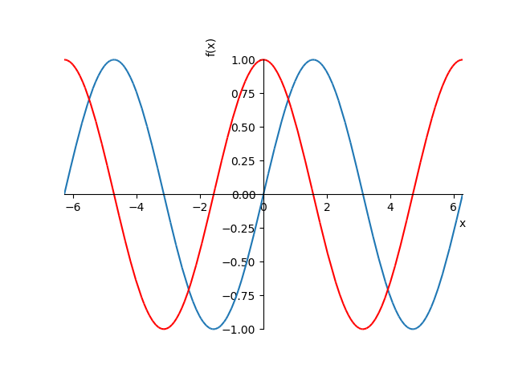
- y = sin(x), (cyan)
- y = cos(x), (red)
>>> sy.plot(sy.tan(x), (x, -2*sy.pi, 2*sy.pi), ylim=(-10,10))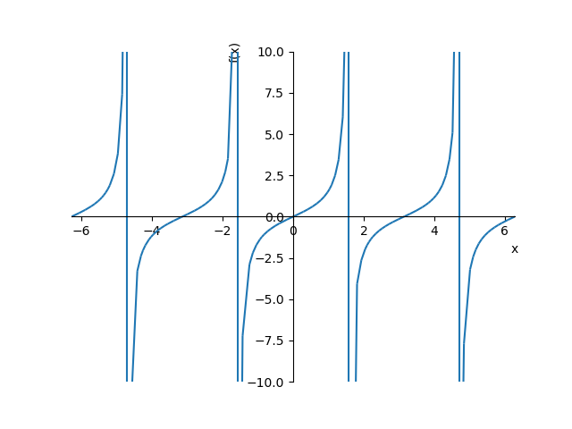
- y = tan(x)
- 双曲線関数
>>> p1 = sy.plot(sy.sinh(x), (x, -4, 4), ylim=(-4, 4), show=False) >>> p2 = sy.plot(sy.cosh(x), (x, -4, 4), ylim=(-4, 4), line_color="green", show=False) >>> p3 = sy.plot(sy.tanh(x), (x, -4, 4), ylim=(-4, 4), line_color="red", show=False) >>> p1.extend(p2) >>> p1.extend(p3) >>> p1.show()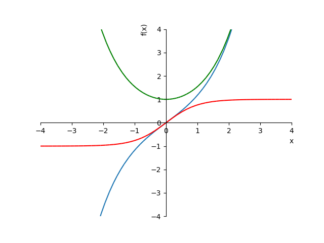
- y = sinh(x), (cyan)
- y = cosh(x), (green)
- y = tanh(x), (red)
- 円・楕円
- 円や楕円の描画は関数 plot_implict() または plot_parametric() を使う
- plot_implict() は陰関数 (implicit function) を描画する
- たとえば、円の方程式 x2 + y2 = r が陰関数
- 第 1 引数には等式 Eq(x**2 + y**2, r) または x**2 + y**2 - r を渡す
- 不等式を指定すると領域を塗りつぶす
- たとえば、Lt(x**2 + y**2, r) は円の中を、Gt(x**2 + y**2, r) は円の外を塗りつぶす
- plot_parametric() は媒介変数表示 (parametric representation) で定義された関数を描画する
- 画面のアスペクト比は plt.rcParams['figure.figsize'] で変更できる
- 参考 URL
- 陰関数 - Wikipedia
- 媒介変数 - Wikipedia
- sympy.plottingでaspect_ratioが変えられない？ 件について, (Higashino Sola さん)
>>> import matplotlib.pyplot as plt >>> plt.rcParams['figure.figsize'] = (6, 6) >>> p1 = sy.plot_implicit(sy.Eq(x**2 +y**2, 1), (x, -1, 1), (y, -1, 1), show=False) >>> p2 = sy.plot_implicit(sy.Eq(x**2/0.25 +y**2, 1), (x, -1, 1), (y, -1, 1), line_color='red', show=False) >>> p3 = sy.plot_implicit(sy.Eq(x**2 +y**2/0.25, 1), (x, -1, 1), (y, -1, 1), line_color='green', show=False) >>> p1.extend(p2) >>> p1.extend(p3) >>> p1.show()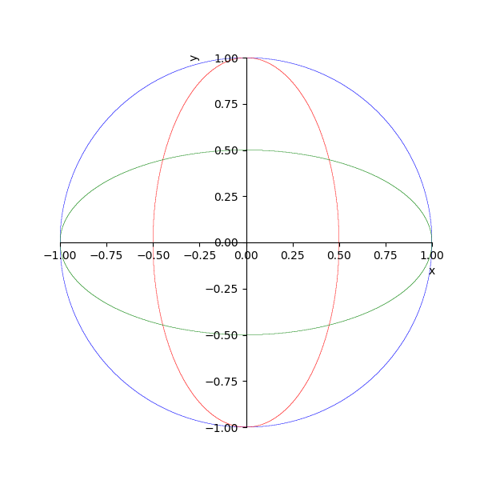
- x2 + y2 = 1, (cyan)
- x2/0.52 + y2 = 1, (red)
- x2 + y2/0.52 = 1, (green)
>>> p1 = sy.plotting.plot_parametric(sy.cos(x), sy.sin(x), (x, 0, 2*sy.pi), show=False) >>> p2 = sy.plotting.plot_parametric(0.5*sy.cos(x), sy.sin(x), (x, 0, 2*sy.pi), line_color="red", show=False) >>> p3 = sy.plotting.plot_parametric(sy.cos(x), 0.5*sy.sin(x), (x, 0, 2*sy.pi), line_color="green", show=False) >>> p1.extend(p2) >>> p1.extend(p3) >>> p1.show()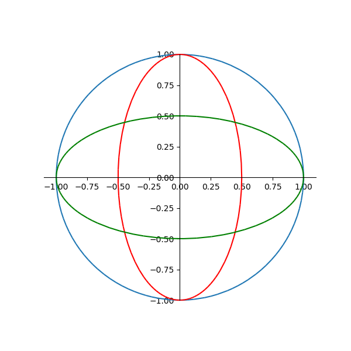
- x = cos(t), y = sin(t), 0 <= t < 2π, (cyan)
- x = 0.5*cos(t), y = sin(t), 0 <= t < 2π, (red)
- x = cos(t), y = 0.5*sin(t), 0 <= t < 2π, (green)
- 三次元グラフの作成
- z = f(x, y) のグラフは plot3d() を使うと簡単
plot3d(expr, (x, low, high), (y, low, high), ...)
plot3d_parametric_line(expr_x, expr_y, expr_z, (t, low, high), ...) plot3d_parametric_surface(expr_x, expr_y, expr_z, (t, low, high), ...)
>>> sy.plotting.plot3d(x**2 + y**2, (x, -2, 2), (y, -2, 2))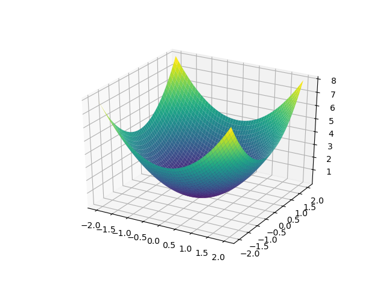
>>> sy.plotting.plot3d(x**2 - y**2, (x, -2, 2), (y, -2, 2))

>>> sy.plotting.plot3d(sy.sin(sy.sqrt(x**2 + y**2)), (x, -3*sy.pi, 3*sy.pi), (y, -3*sy.pi, 3*sy.pi))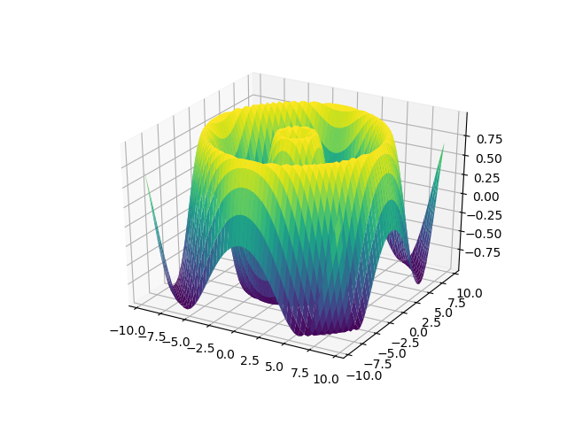
>>> sy.plotting.plot3d_parametric_line(sy.cos(x), sy.sin(x), x, (x, -5*sy.pi, 5*sy.pi))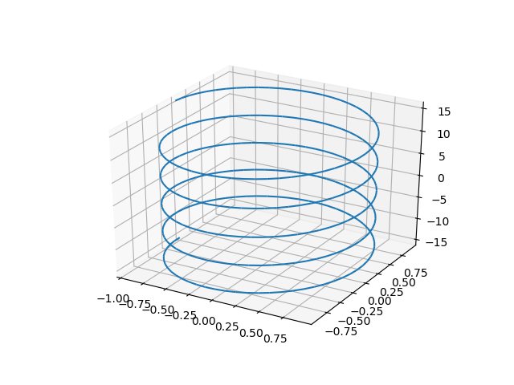
>>> sy.plotting.plot3d_parametric_surface(sy.cos(x)*sy.cos(y), sy.cos(x)*sy.sin(y), sy.sin(x), (x, 0, 2*sy.pi), (y, 0, sy.pi))

>>> sy.plotting.plot3d_parametric_surface(sy.cosh(x)*sy.cos(y), sy.cosh(x)*sy.sin(y), sy.sinh(x), (x, -sy.pi, sy.pi), (y, -sy.pi, sy.pi))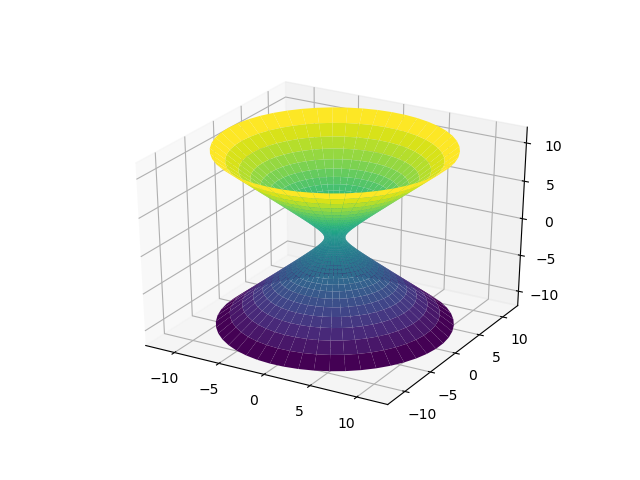